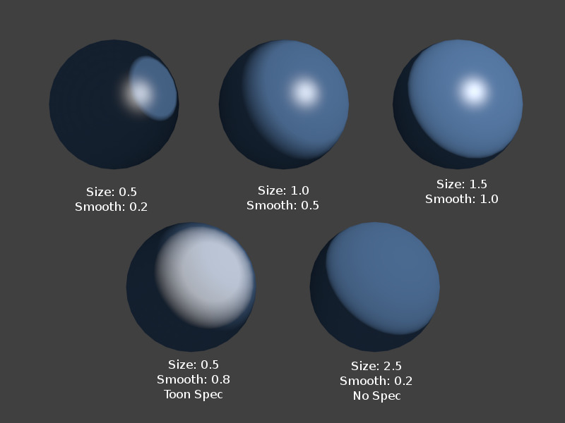
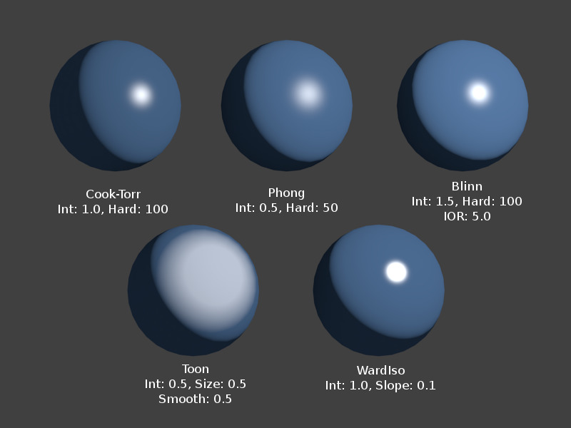

Diffuse Shaders¶
Tham Chiếu -- Reference
| Chế Độ -- Mode: | Toàn Bộ các Chế Độ -- All Modes |
|---|---|
| Bảng -- Panel: |
A diffuse shader determines, simply speaking, the general color of a material when light shines on it. Most shaders that are designed to mimic reality give a smooth falloff from bright to dark from the point of the strongest illumination to the shadowed areas, but Blender also has other shaders for various special effects.
Các Tùy Chọn Phổ Thông -- Common Options¶
All diffuse shaders have the following options:
- Màu -- Color
- Select the base diffuse color of the material.
- Cường Độ -- Intensity
- The shader's brightness, or more accurately, the amount of incident light energy that is actually diffusely reflected towards the camera.
- Dốc Màu -- Ramp
- Allows you to set a range of colors for the Material, and define how the range will vary over a surface. See Color Ramps for details.
Technical Details¶
Light striking a surface and then re-irradiated via a Diffusion phenomenon will be scattered, i.e. re-irradiated in all directions isotropically. This means that the camera will see the same amount of light from that surface point no matter what the incident viewing angle is. It is this quality that makes diffuse light viewpoint independent. Of course, the amount of light that strikes the surface depends on the incident light angle. If most of the light striking a surface is reflected diffusely, the surface will have a matte appearance (Light re-irradiated in the diffusion phenomenon).
{kind=link}
Mẹo
Shader Names
Some shaders are -- traditionally -- named after the people, who first introduced the models on which they are based.
Lambert¶
Tham Chiếu -- Reference
| Chế Độ -- Mode: | Toàn Bộ các Chế Độ -- All Modes |
|---|---|
| Bảng -- Panel: |

Lambert Shader.
This is Blender's default diffuse shader, and is a good general all-around workhorse for materials showing low levels of specular reflection.
- Johann Heinrich Lambert (1728-1777)
- was a Swiss mathematician, physicist and astronomer who published works on the reflection of light, most notably the Beer-Lambert Law which formulates the law of light absorption.
This shader has only the default option, determining how much of available light is reflected. Default is 0.8, to allow other objects to be brighter.

The Lambert diffuse shader settings.
Oren-Nayar¶
Tham Chiếu -- Reference
| Chế Độ -- Mode: | Toàn Bộ các Chế Độ -- All Modes |
|---|---|
| Bảng -- Panel: |
{kind=link}
Oren-Nayar Shader.
Oren-Nayar takes a somewhat more 'physical' approach to the diffusion phenomena as it takes into account the amount of microscopic roughness of the surface. Michael Oren and Shree K. Nayar Their reflectance model, developed in the early 1990s, is a generalization of Lambert's law now widely used in computer graphics.
Tùy Chọn -- Options¶
- Độ Ráp -- Roughness
- The roughness of the surface, and hence, the amount of diffuse scattering.
The Oren-Nayar diffuse shader settings.
Minh Họa -- Toon¶
Tham Chiếu -- Reference
| Chế Độ -- Mode: | Toàn Bộ các Chế Độ -- All Modes |
|---|---|
| Bảng -- Panel: |

Toon Shader, Different Spec. |

Toon Shader Variations. |
The Toon shader is a very 'un-physical' shader in that it is not meant to fake reality, but to produce cartoon cel styled rendering, with clear boundaries between light and shadow and uniformly lit/shadowed regions.
Tùy Chọn -- Options¶
- Kích Thước -- Size
- The size of the lit area.
- Mịn Màng -- Smooth
- The softness of the boundary between lit and shadowed areas.
The Toon diffuse shader settings.
Minnaert¶
Tham Chiếu -- Reference
| Chế Độ -- Mode: | Toàn Bộ các Chế Độ -- All Modes |
|---|---|
| Bảng -- Panel: |
Minnaert Shader.
Minnaert works by darkening parts of the standard Lambertian shader, so if Dark is 1 you get exactly the Lambertian result. Higher darkness values will darken the center of an object (where it points towards the viewer). Lower darkness values will lighten the edges of the object, making it look somewhat velvet. Marcel Minnaert (1893-1970) was a Belgian astronomer interested in the effects of the atmosphere on light and images who in 1954 published a book entitled "The Nature of Light and Color in the Open Air".
Tùy Chọn -- Options¶
- Dark
- The darkness of the 'lit' areas (higher) or the darkness of the edges pointing away from the light source (lower).
The Minnaert diffuse shader settings.
Fresnen -- Fresnel¶
Tham Chiếu -- Reference
| Chế Độ -- Mode: | Toàn Bộ các Chế Độ -- All Modes |
|---|---|
| Bảng -- Panel: |

Various settings for the Fresnel shader, Cook-Torr Specular shader kept at Intensity 0.5, Hardness: 50. |

Fresnel Shader, Different Spec. |
With a Fresnel shader the amount of diffuse reflected light depends on the incidence angle, i.e. from the direction of the light source. Areas pointing directly towards the light source appear darker; areas perpendicular to the incoming light become brighter. Augustin-Jean Fresnel (1788-1827) was a French physicist who contributed significantly to the establishment of the theory of wave optics.
Tùy Chọn -- Options¶
- Fresnen -- Fresnel
- Power of the Fresnel effect, 5.0 is max.
- Hệ Số -- Factor
- Blending factor of the Fresnel factor to blend in, 5.0 is max.

The Fresnel diffuse shader settings.
- Phát Xạ -- Emit
- Amount of light to emit.
- Môi Trường -- Ambient
- Amount of global ambient color the material receives.
- Tính Trong Mờ -- Translucency
- Amount of diffuse shading on the back side.
- Không Tô Bóng -- Shadeless
- Make this material insensitive to light or shadow.
- Tô Bóng Tiếp Tuyến -- Tangent Shading
Use the material's tangent vector instead of the normal for shading -- for anisotropic shading effects (e.g. soft hair and brushed metal).
Xem thêm
Settings for strand rendering in the menu further down and in the Particle System menu.
- Nội Suy Lập Phương -- Cubic Interpolation
- Use cubic interpolation for diffuse values, for smoother transitions between light areas and dark areas.